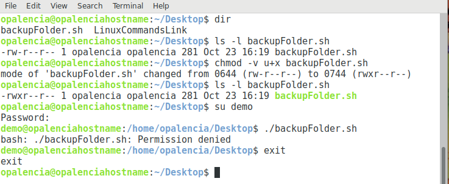

Cambiar permisos a carpetas y archivos > chmod¶
Nombre del comando: chmod
Man page online: https://linux.die.net/man/1/chmod
Descripción: Cambiar permisos a carpetas y archivos.
Man page local: $ man chmod o $ man chmod > chmod.txt
Instalado por defecto: Sí, al menos en Debian.
Algunas Opciones:
“rwxXst” Estas son las letras que sirven como parámetros para realizar los cambios de permisos.
“r = read = lectura”, “w = write = escritura”, “x = execute = ejecución”, “X = execute, sólo si el archivo es un folder”, “s = asignar a usuario o grupo un ID en ejecución”, “t = indicador de eliminación restringida”
“+” El símbolo mas agrega el permiso a asignar (rwxXst).
“-“ El símbolo menos quita el permiso a asignar (rwxXst).
“ugoa” Controla el acceso de los usuarios al archivo o carpeta. “u = solo el dueño del archivo lo puede manipular, g = otros usuarios que pertenezcan al mismo grupo lo pueden manipular, o = otros usuarios que no pertenecen al mismo grupo lo pueden manipular, a = todos los usuarios lo pueden manipular (está por defecto sino se asigna ninguna ugoa)”.
-v, --verbose Explique qué se está haciendo.
-c, --changes Igual que verbose, pero sólo cuando los cambios se hayan realizado con éxito.
-R, --recursive Cambiar los archivos y carpetas de forma recursiva.
Ejemplo 1: $ chmod -v u+x backupFolder.sh, he creado un archivo bash que realice un respaldo de la documentación que estoy haciendo y que lo guarde en Dropbox, sólo el usuario opalencia debe manipular dicho script (u) y para que se ejecute va la (x), como se puede apreciar en la imagen de arriba, si otro usuario trata de ejecutarlo no se lo permitirá por los permisos.
Ejemplo 2: $ chmod -cR a-w muchos, tengo una carpeta “muchos” que contiene varias carpetas y archivos, lo que le digo es que le quite de forma recursiva los permisos de escritura (w) a todo su contenido y además que ningún usuario tenga permisos de escritura, incluido el dueño.